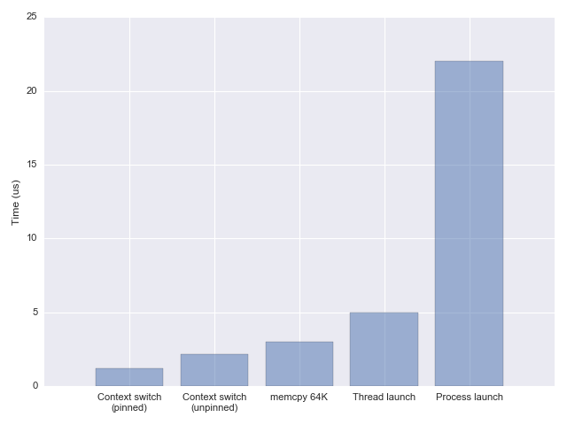

In this post I want to explore the costs of threads on modern Linux machines, both in terms of time and space. The background context is designing high-load concurrent servers, where using threads is one of the common schemes.
Important disclaimer: it's not my goal here to provide an opinion in the threads vs. event-driven models debate. Ultimately, both are tools that work well in some scenarios and less well in others. That said, one of the major criticisms of a thread-based model is the cost - comments like "but context switches are expensive!" or "but a thousand threads will eat up all your RAM!", and I do intend to study the data underlying such claims in more detail here. I'll do this by presenting multiple code samples and programs that make it easy to explore and experiment with these measurements.
Linux threads and NPTL
In the dark, old ages before version 2.6, the Linux kernel didn't have much specific support for threads, and they were more-or-less hacked on top of process support. Before futexes there was no dedicated low-latency synchronization solution (it was done using signals); neither was there much good use of the capabilities of multi-core systems [1].
The Native POSIX Thread Library (NPTL) was proposed by Ulrich Drepper and Ingo Molnar from Red Hat, and integrated into the kernel in version 2.6, circa 2005. I warmly recommend reading its design paper. With NPTL, thread creation time became about 7x faster, and synchronization became much faster as well due to the use of futexes. Threads and processes became more lightweight, with strong emphasis on making good use of multi-core processors. This roughly coincided with a much more efficient scheduler, which made juggling many threads in the Linux kernel even more efficient.
Even though all of this happened 13 years ago, the spirit of NPTL is still easily observable in some system programming code. For example, many thread and synchronization-related paths in glibc have nptl in their name.
Threads, processes and the clone system call
This was originally meant to be a part of this larger article, but it was getting too long so I split off a separate post on launching Linux processes and threads with clone, where you can learn about the clone system call and some measurements of how expensive it is to launch new processes and threads.
The rest of this post will assume this is familiar information and will focus on context switching and memory usage.
What happens in a context switch?
In the Linux kernel, this question has two important parts:
- When does a kernel switch happen
- How it happens
The following deals mostly with (2), assuming the kernel has already decided to switch to a different user thread (for example because the currently running thread went to sleep waiting for I/O).
The first thing that happens during a context switch is a switch to kernel mode, either through an explicit system call (such as write to some file or pipe) or a timer interrupt (when the kernel preempts a user thread whose time slice has expired). This requires saving the user space thread's registers and jumping into kernel code.
Next, the scheduler kicks in to figure out which thread should run next. When we know which thread runs next, there's the important bookkeeping of virtual memory to take care of; the page tables of the new thread have to be loaded into memory, etc.
Finally, the kernel restores the new thread's registers and cedes control back to user space.
All of this takes time, but how much time, exactly? I encourage you to read some additional online resources that deal with this question, and try to run benchmarks like lm_bench; what follows is my attempt to quantify thread switching time.
How expensive are context switches?
To measure how long it takes to switch between two threads, we need a benchmark that deliberatly triggers a context switch and avoids doing too much work in addition to that. This would be measuring just the direct cost of the switch, when in reality there is another cost - the indirect one, which could even be larger. Every thread has some working set of memory, all or some of which is in the cache; when we switch to another thread, all this cache data becomes unneeded and is slowly flushed out, replaced by the new thread's data. Frequent switches back and forth between the two threads will cause a lot of such thrashing.
In my benchmarks I am not measuring this indirect cost, because it's pretty difficult to avoid in any form of multi-tasking. Even if we "switch" between different asynchronous event handlers within the same thread, they will likely have different memory working sets and will interfere with each other's cache usage if those sets are large enough. I strongly recommend watching this talk on fibers where a Google engineer explains their measurement methodology and also how to avoid too much indirect switch costs by making sure closely related tasks run with temporal locality.
These code samples measure context switching overheads using two different techniques:
- A pipe which is used by two threads to ping-pong a tiny amount of data. Every read on the pipe blocks the reading thread, and the kernel switches to the writing thread, and so on.
- A condition variable used by two threads to signal an event to each other.
There are additional factors context switching time depends on; for example, on a multi-core CPU, the kernel can occasionally migrate a thread between cores because the core a thread has been previously using is occupied. While this helps utilize more cores, such switches cost more than staying on the same core (again, due to cache effects). Benchmarks can try to restrict this by running with taskset pinning affinity to one core, but it's important to keep in mind this only models a lower bound.
Using the two techniques I'm getting fairly similar results: somewhere between 1.2 and 1.5 microseconds per context switch, accounting only for the direct cost, and pinning to a single core to avoid migration costs. Without pinning, the switch time goes up to ~2.2 microseconds [2]. These numbers are largely consistent with the reports in the fibers talk mentioned above, and also with other benchmarks found online (like lat_ctx from lmbench).
What does this mean in practice?
So we have the numbers now, but what do they mean? Is 1-2 us a long time? As I have mentioned in the post on launch overheads, a good comparison is memcpy, which takes 3 us for 64 KiB on the same machine. In other words, a context switch is a bit quicker than copying 64 KiB of memory from one location to another.
1-2 us is not a long time by any measure, except when you're really trying to optimize for extremely low latencies or high loads.
As an example of an artificially high load, here is another benchmark which writes a short message into a pipe and expects to read it from another pipe. On the other end of the two pipes is a thread that echoes one into the other.
Running the benchmark on the same machine I used to measure the context switch times, I get ~400,000 iterations per second (this is with taskset to pin to a single core). This makes perfect sense given the earlier measurements, because each iteration of this test performs two context switches, and at 1.2 us per switch this is 2.4 us per iteration.
You could claim that the two threads compete for the same CPU, but if I don't pin the benchmark to a single core, the number of iterations per second halves. This is because the vast majority of time in this benchmark is spent in the kernel switching from one thread to the other, and the core migrations that occur when it's not pinned greatly ouweigh the loss of (the very minimal) parallelism.
Just for fun, I rewrote the same benchmark in Go; two goroutines ping-ponging short message between themselves over a channel. The throughput this achieves is dramatically higher - around 2.8 million iterations per second, which leads to an estimate of ~170 ns switching between goroutines [3]. Since switching between goroutines doesn't require an actual kernel context switch (or even a system call), this isn't too surprising. For comparison, Google's fibers use a new Linux system call that can switch between two tasks in about the same time, including the kernel time.
A word of caution: benchmarks tend to be taken too seriously. Please take this one only for what it demonstrates - a largely synthetical workload used to poke into the cost of some fundamental concurrency primitives.
Remember - it's quite unlikely that the actual workload of your task will be negligible compared to the 1-2 us context switch; as we've seen, even a modest memcpy takes longer. Any sort of server logic such as parsing headers, updating state, etc. is likely to take orders of magnitude longer. If there's one takeaway to remember from these sections is that context switching on modern Linux systems is super fast.
Memory usage of threads
Now it's time to discuss the other overhead of a large number of threads - memory. Even though all threads in a process share their, there are still areas of memory that aren't shared. In the post about clone we've mentioned page tables in the kernel, but these are comparatively small. A much larger memory area that it private to each thread is the stack.
The default per-thread stack size on Linux is usually 8 MiB, and we can check what it is by invoking ulimit:
$ ulimit -s
8192
To see this in action, let's start a large number of threads and observe the process's memory usage. This sample launches 10,000 threads and sleeps for a bit to let us observe its memory usage with external tools. Using tools like top (or preferably htop) we see that the process uses ~80 GiB of virtual memory, with about 80 MiB of resident memory. What is the difference, and how can it use 80 GiB of memory on a machine that only has 16 available?
Virtual vs. Resident memory
A short interlude on what virtual memory means. When a Linux program allocates memory (with malloc) or otherwise, this memory initially doesn't really exist - it's just an entry in a table the OS keeps. Only when the program actually accesses the memory is the backing RAM for it found; this is what virtual memory is all about.
Therefore, the "memory usage" of a process can mean two things - how much virtual memory it uses overall, and how much actual memory it uses. While the former can grow almost without bounds - the latter is obviously limited to the system's RAM capacity (with swapping to disk being the other mechanism of virtual memory to assist here if usage grows above the side of physical memory). The actual physical memory on Linux is called "resident" memory, because it's actually resident in RAM.
There's a good StackOverflow discussion of this topic; here I'll just limit myself to a simple example:
int main(int argc, char** argv) {
report_memory("started");
int N = 100 * 1024 * 1024;
int* m = malloc(N * sizeof(int));
escape(m);
report_memory("after malloc");
for (int i = 0; i < N; ++i) {
m[i] = i;
}
report_memory("after touch");
printf("press ENTER\n");
(void)fgetc(stdin);
return 0;
}
This program starts by allocating 400 MiB of memory (assuming an int size of 4) with malloc, and later "touches" this memory by writing a number into every element of the allocated array. It reports its own memory usage at every step - see the full code sample for the reporting code [4]. Here's the output from a sample run:
$ ./malloc-memusage
started: max RSS = 4780 kB; vm size = 6524 kB
after malloc: max RSS = 4780 kB; vm size = 416128 kB
after touch: max RSS = 410916 kB; vm size = 416128 kB
The most interesting thing to note is how vm size remains the same between the second and third steps, while max RSS grows from the initial value to 400 MiB. This is precisely because until we touch the memory, it's fully "virtual" and isn't actually counted for the process's RAM usage.
Therefore, distinguishing between virtual memory and RSS in realistic usage is very important - this is why the thread launching sample from the previous section could "allocate" 80 GiB of virtual memory while having only 80 MiB of resident memory.
Back to memory overhead for threads
As we've seen, a new thread on Linux is created with 8 MiB of stack space, but this is virtual memory until the thread actually uses it. If the thread actually uses its stack, resident memory usage goes up dramatically for a large number of threads. I've added a configuration option to the sample program that launches a large number of threads; with it enabled, the thread function actually uses stack memory and from the RSS report it is easy to observe the effects. Curiously, if I make each of 10,000 threads use 400 KiB of memory, the total RSS is not 4 GiB but around 2.6 GiB [5].
How to we control the stack size of threads? One option is using the ulimit command, but a better option is with the pthread_attr_setstacksize API. The latter is invoked programatically and populates a pthread_attr_t structure that's passed to thread creation. The more interesting question is - what should the stack size be set to?
As we have seen above, just creating a large stack for a thread doesn't automatically eat up all the machine's memory - not before the stack is being used. If our threads actually use large amounts of stack memory, this is a problem, because this severely limits the number of threads we can run concurrently. Note that this is not really a problem with threads - but with concurrency; if our program uses some event-driven approach to concurrency and each handler uses a large amount of memory, we'd still have the same problem.
If the task doesn't actually use a lot of memory, what should we set the stack size to? Small stacks keep the OS safe - a deviant program may get into an infinite recursion and a small stack will make sure it's killed early. Moreover, virtual memory is large but not unlimited; especially on 32-bit OSes, we might not have 80 GiB of virtual address space for the process, so a 8 MiB stack for 10,000 threads makes no sense. There's a tradeoff here, and the default chosen by 32-bit Linux is 2 MiB; the maximal virtual address space available is 3 GiB, so this imposes a limit of ~1500 threads with the default settings. On 64-bit Linux the virtual address space is vastly larger, so this limitation is less serious (though other limits kick in - on my machine the maximal number of threads the OS lets one process start is about 32K).
Therefore I think it's more important to focus on how much actual memory each concurrent task is using than on the OS stack size limit, as the latter is simply a safety measure.
Conclusion
The numbers reported here paint an interesting picture on the state of Linux multi-threaded performance in 2018. I would say that the limits still exist - running a million threads is probably not going to make sense; however, the limits have definitely shifted since the past, and a lot of folklore from the early 2000s doesn't apply today. On a beefy multi-core machine with lots of RAM we can easily run 10,000 threads in a single process today, in production. As I've mentioned above, it's highly recommended to watch Google's talk on fibers; through careful tuning of the kernel (and setting smaller default stacks) Google is able to run an order of magnitude more threads in parallel.
Whether this is sufficient concurrency for your application is very obviously project-specific, but I'd say that for higher concurrencies you'd probably want to mix in some asynchronous processing. If 10,000 threads can provide sufficient concurrency - you're in luck, as this is a much simpler model - all the code within the threads is serial, there are no issues with blocking, etc.
| [1] | For example, in order to implement POSIX semantics properly, a single thread was designated as a "manager" and managed operations like "create a new thread". This created an unfortunate serialization point and a bottleneck. |
| [2] | These numbers also vary greatly between CPUs. The numbers reported herein are on my Haswell i7-4771. On a different contemporary machine (a low-end Xeon) I measured switch times that were about 50-75% longer. |
| [3] | Curiously, pinning the Go program to a single core (by means of setting GOMAXPROCS=1 and running with taskset) increases the throughput by only by 10% or so. The Go scheduler is not optimized for this strange use case of endless hammering between two goroutine, but it performs very well regardless. |
| [4] | Note that while for resident memory there's a convenient getrusage API, to report virtual memory size we have to parse /proc/PID/status. |
| [5] | According to Tom Dryer, recent Linux version only approximate this usage, which could explain the discrepancy - see this explanation. |